This script is used for quick placement of windows in 3Ds Max scene.
Before using the script requires preset the windows.
Read more in the Settings section.
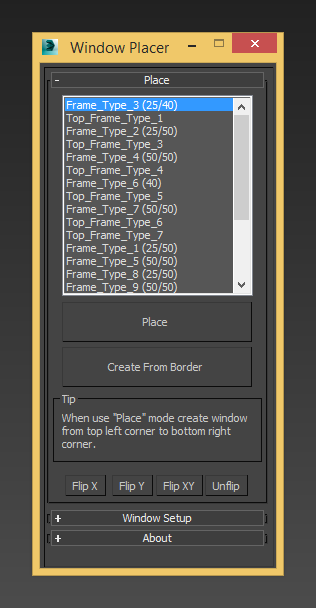
Before using the script requires preset the windows.
Read more in the Settings section.
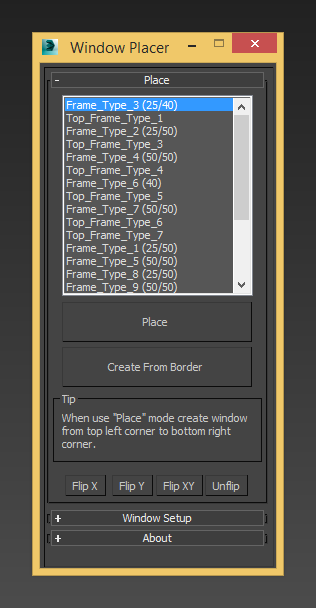
Features:
- Windows list
- Placement the windows with snap
- Automatic placement
- Flip by local axis (X, Y, Z)
- Tool for windows settings
This script has a commercial license.
Purchase the license to use {{name}}.
Pruchase key
Данный скрипт служит для быстрой расстановки окон в сцене 3Ds Max.
Перед использованием скрипта необходима предварительная настройка окон.
Подробнее читайте в разделе Settings.
Перед использованием скрипта необходима предварительная настройка окон.
Подробнее читайте в разделе Settings.
Возможности:
- Список окон
- Расстановка окон по привязке
- Автоматическая расстановка
- Flip окон по локальным осям (X, Y, Z)
- Инструмент настройки окон для работы скрипта
Данный скрипт имеет коммерческую лицензию.
Приобретите лицензию для использования {{name}}.
Купить ключ
В версии {{fullname}} используется универсальный установщик,
который позволяет автоматически копировать необходимые файлы,
а также добавлять кнопки на панель инструментов (ToolBar) и в контекстное меню (QuadMenu).
Или выполните его Scripting → Run Script.
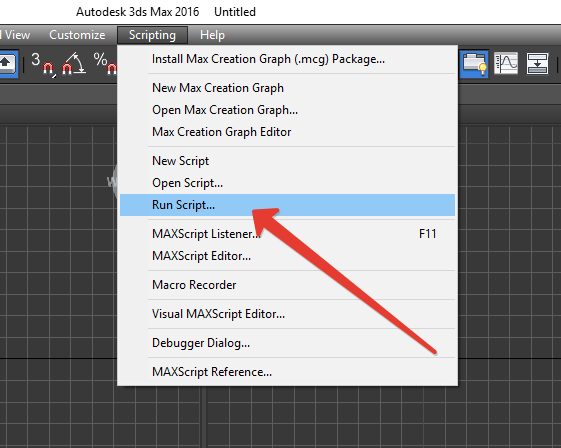
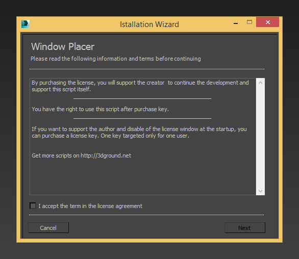
Следуйте инструкциям:
Register interface menus:
Во время процесса установки вам будет необходимо подтвердить копирование файлов от имени Администратора, нажав кнопку Yes!
После успешного окончания установки вы увидите сообщение.
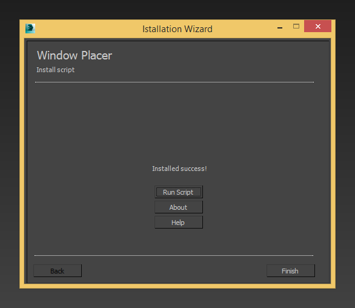
Дополнительные опции:
Кнопка в ToolBar.
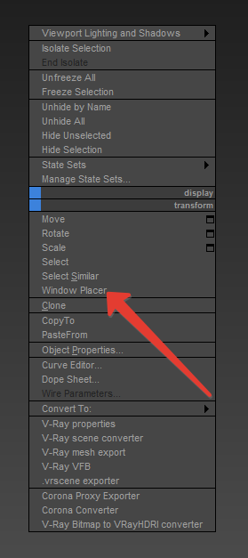
Кнопка в QuadMenu.
который позволяет автоматически копировать необходимые файлы,
а также добавлять кнопки на панель инструментов (ToolBar) и в контекстное меню (QuadMenu).
Шаг 1
Запустите установщик, перетянув PruneScene.mzp в окно 3D Studio Max.Или выполните его Scripting → Run Script.
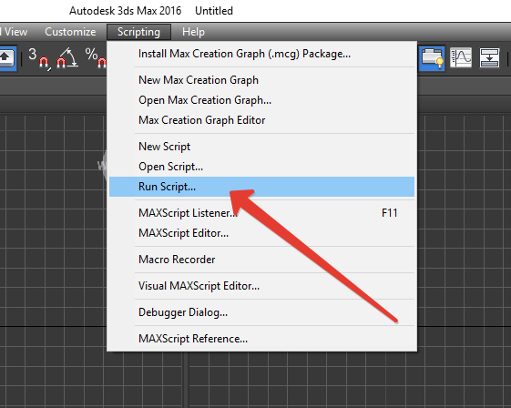
Шаг 2
После запуска установщика, вы увидите следующее окно.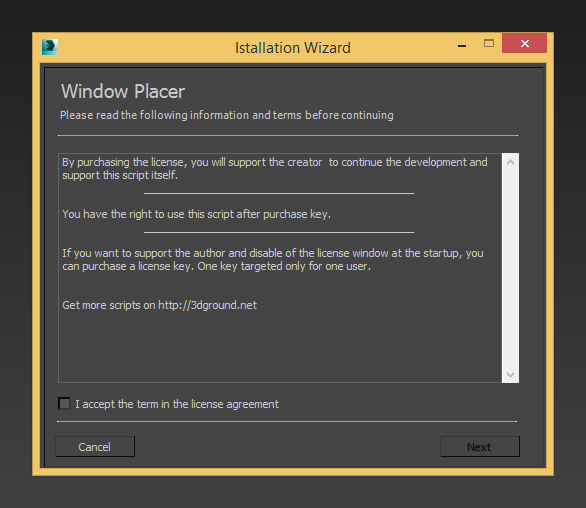
Следуйте инструкциям:
- Ознакомьтесь с текстом лицензии
- Согласитесь с лицензией I accept the term in the license agreement
- Нажмите Next
Шаг 3
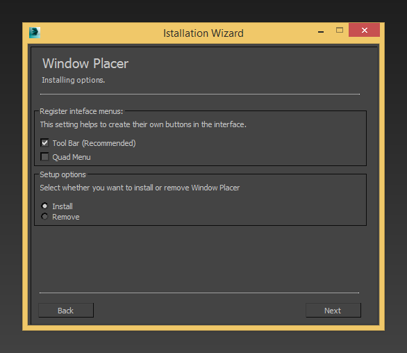Register interface menus:
- Tool Bar (Recommended) - установки кнопки на панель инструментов (Рекомендуется)
- Quad Menu - установка пункта в контекстном меню
- Install - для установки скрипта
- Remove - для удаления скрипта
Шаг 4
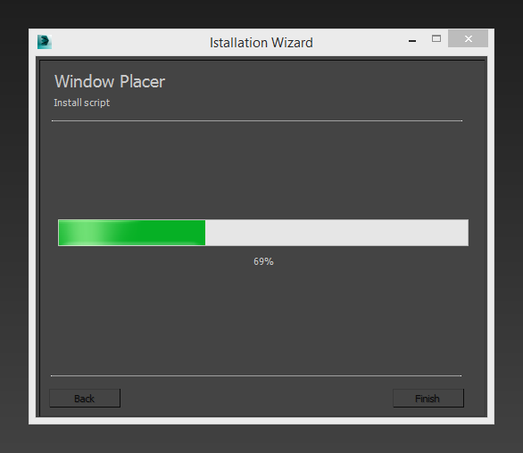Во время процесса установки вам будет необходимо подтвердить копирование файлов от имени Администратора, нажав кнопку Yes!
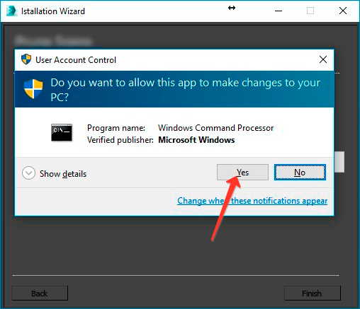Важно!
Обязательно подтвердите действие нажатием Yes, иначе процесс установки завершится некорректно!
После успешного окончания установки вы увидите сообщение.
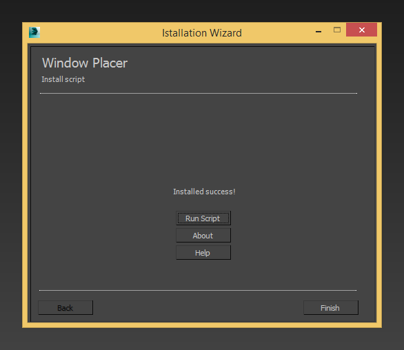
Дополнительные опции:
- Run Script - запустить скрипт
- About - информация об установщике
- Help - открыть данную справку
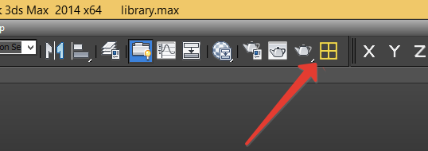Обратите внимание!
В зависимости от опций, которые были выбраны при установке, в интерфейсе 3D Studio Max появятся кнопки!
Кнопка в ToolBar.
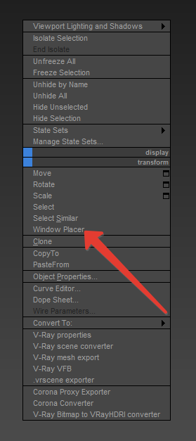
Кнопка в QuadMenu.
In the version of {{fullname}} used Universal Installer,
which allows you to automatically copy necessary files,
and add the buttons to the Tool Bar and QuadMenu.
Or execute from Scripting → Run Script.
Follow the instructions:
Register interface menus:
During the installation process you will be required to confirm the copying of files with the Administrator rights, by clicking Yes!
After a successful installation is finished, you will see a message.
Additional options:
Button in the ToolBar.
Button in the QuadMenu.
which allows you to automatically copy necessary files,
and add the buttons to the Tool Bar and QuadMenu.
Step 1
Run the installer, just Drag & Drop PruneScene.mzp in to 3D Studio Max window.Or execute from Scripting → Run Script.
Step 2
After run the installer you can see the next window.Follow the instructions:
- Read the license text
- Agree with license I accept the term in the license agreement
- Press the Next
Step 3
Register interface menus:
- Tool Bar (Recommended) - install Tool Bar buttons (Recommended)
- Quad Menu - install as item in QuadMenu
- Install - for install script
- Remove - for remove script
Step 4
During the installation process you will be required to confirm the copying of files with the Administrator rights, by clicking Yes!
Important!
Be sure to confirm the action by pressing Yes, otherwise the installation will be failed!
After a successful installation is finished, you will see a message.
Additional options:
- Run Script - run the script
- About - information about Installer
- Help - open this help
Note
Depending on the options that were selected during installation in the 3D Studio Max interface buttons will appear!
Button in the ToolBar.
Button in the QuadMenu.
For remove the {{fullname}} you must do the following:
Press the Next.

Press the Next.
During the removal process you will be required to confirm the removing the files with Administrator rights, by clicking Yes!
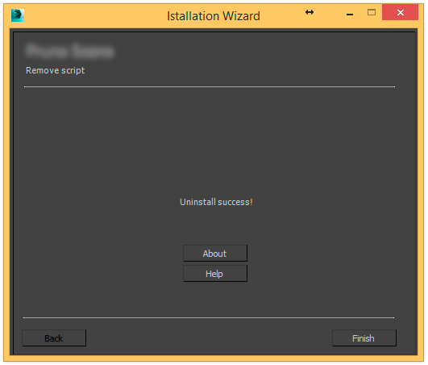
The script is completely removed from your computer as well as deleted {{name}} buttons of ToolBar and QuadMenu!
Step 1
Run the installer, just Drag & Drop PruneScene.mzp in to 3D Studio Max window. Or execute from Scripting → Run Script.Step 2
Agree with license I accept the term in the license agreement.Press the Next.
Step 3
In Setup Options set the Remove value.
Press the Next.
Step 4
During the removal process you will be required to confirm the removing the files with Administrator rights, by clicking Yes!
After successful completion of the removal, you will see a message.Important!
Be sure to confirm the action by pressing Yes, otherwise the uninstall will be failed!
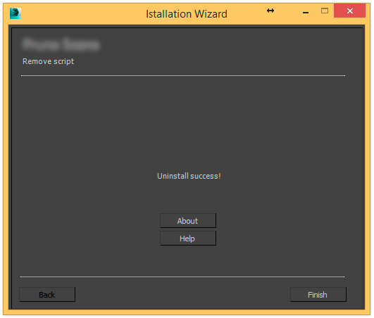
The script is completely removed from your computer as well as deleted {{name}} buttons of ToolBar and QuadMenu!
Для удаления {{fullname}} вам необходимо выполнить следующие действия:
Или выполните его Scripting → Run Script.
Нажмите Next.
Нажмите Next.
Во время процесса удаления вам будет необходимо подтвердить действие удаления файлов от имени Администратора, нажав кнопку Yes!
Скрипт полностью удален с вашего компьютера, также удалены кнопки {{name}} из ToolBar и QuadMenu!
Шаг 1
Запустите установщик, перетянув PruneScene.mzp в окно 3D Studio Max.Или выполните его Scripting → Run Script.
Шаг 2
Согласитесь с лицензией I accept the term in the license agreement.Нажмите Next.
Шаг 3
В Setup Options установите переключатель на значение Remove.
Нажмите Next.
Шаг 4
Во время процесса удаления вам будет необходимо подтвердить действие удаления файлов от имени Администратора, нажав кнопку Yes!
После успешного окончания удаления вы увидите сообщение.Важно!
Обязательно подтвердите действие нажатием Yes, иначе процесс удаления завершится некорректно!
Скрипт полностью удален с вашего компьютера, также удалены кнопки {{name}} из ToolBar и QuadMenu!
Шаг 1
Запустите Window Placer, нажав соответствующую кнопку в ToolBar или QuadMenu.Шаг 2
Загрузите в сцену свою библиотеку окон при помощи File → Merge.Если у вас еще нет настроенной библиотеки окон, вам необходимо настроить каждое окно вручную.
Важно:
Настройку и расстановку окон обязательно нужно производить в одинаковых системных еденицах измерения!
Настройка окна:
- Откройте свиток Window Setup
- Выполните поочередно все пункты
- Более подробно смотрите раздел Settings
Шаг 3
После настройки библиотеки окон их названия появятся списке:Шаг 4
Выберите нужное окно из списка, после чего нажмите Place или Create From Borders.Режим Place:
В данном режиме окна расставляются вручную по одному.Нажмите кнопку Place, у вас автоматически включится инструмент Tape (Линейка).
Постройте линейку начиная от верхнего левого угла до нижнего правого, после чего на месте линейки будет создано окно.
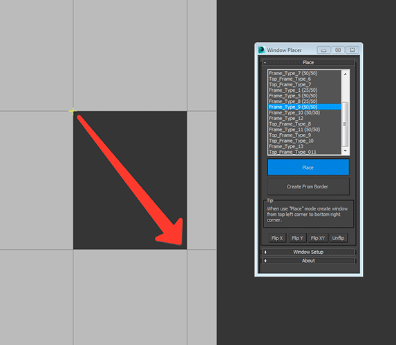
Режим Create From Border:
В данном режиме окна расставляются автоматически.В Editable Poly выберите открытые грани в вашей стене, нажмите кнопку Create From Border, после чего в оконных проемах будут вставлены окна.

Примечание:
Каждый Open Border должен состоять только из четырех точек.
К примеру если сделать Cap Polygons, каждый полигон должен быть четырехугольным!
Шаг 5
Не забудьте сохранить настроенные окна в другой файл.Настроенные окна можно будет использовать снова и снова в новых сценах.
Step 1
Launch Window Placer, by pressing the button on the ToolBar or QuadMenu.Step 2
Import in the scene your own windows library, using File → Merge.If you have not configured the windows library, you need to manually configure each window.
Note:
Setup windows and placing must be the in same system units!
Configure window:
- Open the rollout Window Setup
- Follow all the items one by one
- For more details see the Settings section
Step 3
After setting up the library windows of their name appears in the list:Step 4
Select the window you want from the list, and then click the Place or Create From Borders.Place Mode:
In this mode, the windows are placed one by one manually.Press the button Place, you will automatically turn on Tape tool.
Build a tape from top left to bottom right corner, and then will be created window.
Create From Border Mode:
In this mode, the windows are placed automatically.In Editable Poly select Open Borders, then press the button Create From Border, after that in the window openings are inserted window.
Note:
Each Open Border should consist of only four points.
For example, if you make Cap Polygons, each polygon must be quadrangular!
Step 5
Do not forget to save your customized window into another file.Customized window can be used again and again in new scenes.
Очень ответственной частью является правильная настройка окон.
Обязательно у всех окон должен быть правильный Pivot, и правильное положение без трансформаций (Reset XForm),
так чтобы фасадная часть окна была перпендикулярно в виде Front.
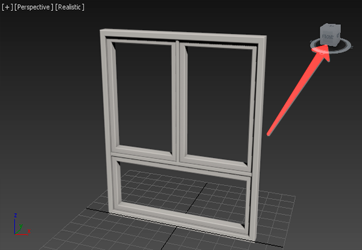
Откройте свиток Window Setup и поочередно выполните все шаги:
Нажмите кнопку Set Pivot.
Постройте линейку по диагонали от левого верхнего угла до правого нижнего с привязкой по Vertex.
В центре линейки и будет ваш Pivot.
Тем самым вы установите ширину и высоту окна.
Для других объектов, таких как оконные рамки установите размеры как показано на рисунке ниже.
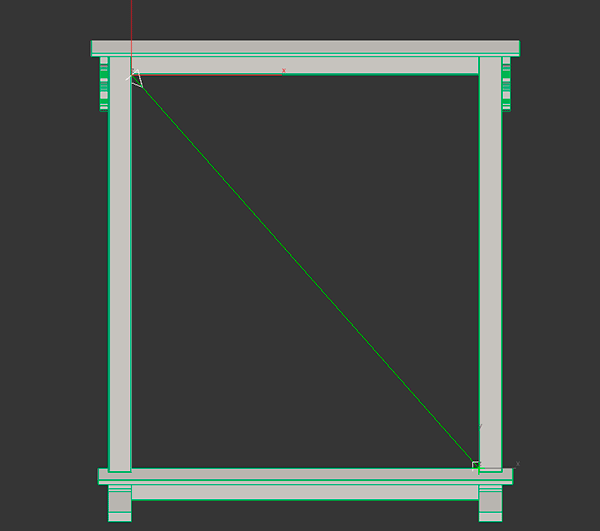
Перейдите в режим редактирования Poly.
Выделите левые точки окна, нажмите Add Left Vertex.
Выделите правые нажмите Add Right Vertext.
Аналогично проделайте операции и для верхних и нижних точек.
Эти точки впоследствии будут смещаться влево, вправо, вверх или низ.
добавьте эти точки Add Left Vertex, что бы смещались влево и Add Right Vertex, что бы смещались вправо.
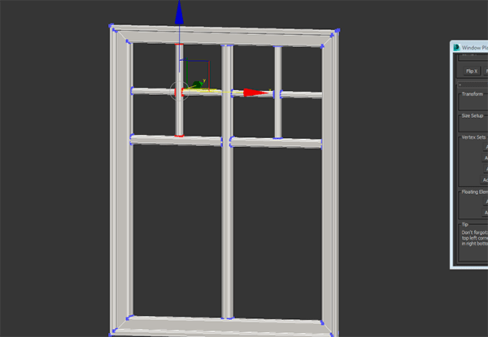
Обязательно у всех окон должен быть правильный Pivot, и правильное положение без трансформаций (Reset XForm),
так чтобы фасадная часть окна была перпендикулярно в виде Front.
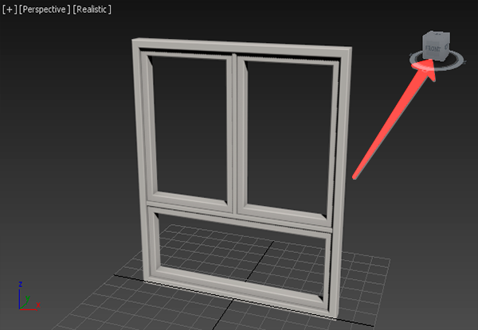
Откройте свиток Window Setup и поочередно выполните все шаги:
Шаг 1: Set Pivot
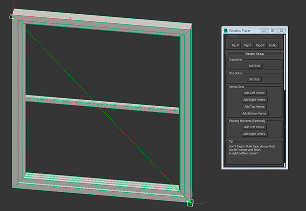Нажмите кнопку Set Pivot.
Постройте линейку по диагонали от левого верхнего угла до правого нижнего с привязкой по Vertex.
В центре линейки и будет ваш Pivot.
Примечание:
Возможно вам нужно будет дополнительно отредактировать Pivot вручную!
Шаг 2: Set Size
Нажмите кнопку Set Size. Постройте линейку по диагонали от левого верхнего угла до правого нижнего.Тем самым вы установите ширину и высоту окна.
Для других объектов, таких как оконные рамки установите размеры как показано на рисунке ниже.
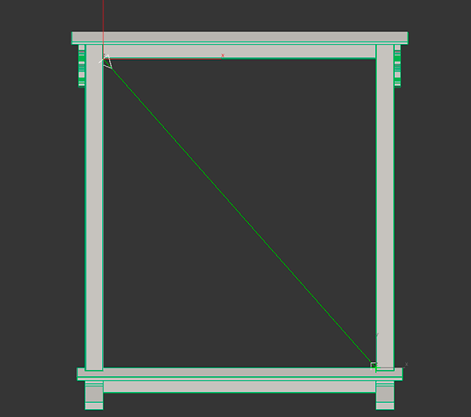
Шаг 3: Vertex Sets
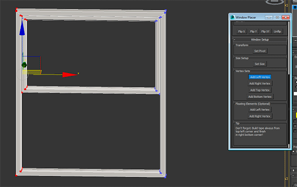Перейдите в режим редактирования Poly.
Выделите левые точки окна, нажмите Add Left Vertex.
Выделите правые нажмите Add Right Vertext.
Аналогично проделайте операции и для верхних и нижних точек.
Эти точки впоследствии будут смещаться влево, вправо, вверх или низ.
Важно!
Если вы меняете геометрию окна, все настройки нужно сделать заново!
Шаг 4: Floating Elements (Optional)
Если нужно, чтобы какой то элемент окна смещался влево или вправо пропорционально изменению ширины окна,Примечание:
Данный шаг является опциональным!
добавьте эти точки Add Left Vertex, что бы смещались влево и Add Right Vertex, что бы смещались вправо.
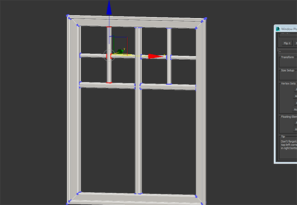
It is a responsible part correct configure windows.
Be sure to have all the windows should be the correct Pivot, and the correct position without transformation (Reset XForm),
so that would be of the facade of the window it was perpendicular as Front view.
Open rollout Window Setup and follow the steps:
Press the button Set Pivot.
Build a tape diagonally from the upper left corner to the right lower snap by Vertex.
Thus, you set the width and height of the window.
For other objects, such as window frames, set the dimensions as shown in the figure below.
Go to Edit Poly mode.
Select the left points of the window, click Add Left Vertex.
Select the right points, clickAdd Right Vertext.
Similarly, do the operation and for the upper and bottom points.
These points will later be shifted to the left, right, up or down.
add this points Add Left Vertex, that would be shifted to the left and Add Right Vertex, that would be shifted to the right.
Be sure to have all the windows should be the correct Pivot, and the correct position without transformation (Reset XForm),
so that would be of the facade of the window it was perpendicular as Front view.
Open rollout Window Setup and follow the steps:
Step 1: Set Pivot
Press the button Set Pivot.
Build a tape diagonally from the upper left corner to the right lower snap by Vertex.
Note:
Perhaps you will want to further edit the Pivot manually!
Step 2: Set Size
Press the button Set Size. Build a tape diagonally from the upper left corner to the lower right corner.Thus, you set the width and height of the window.
For other objects, such as window frames, set the dimensions as shown in the figure below.
Step 3: Vertex Sets
Go to Edit Poly mode.
Select the left points of the window, click Add Left Vertex.
Select the right points, clickAdd Right Vertext.
Similarly, do the operation and for the upper and bottom points.
These points will later be shifted to the left, right, up or down.
Warning!
If you change the geometry of the window, all the settings you need to re-do!
Step 4: Floating Elements (Optional)
If you want a window element that has shifted to the left or right in proportion to the width of the window,Note:
This step is optional!
add this points Add Left Vertex, that would be shifted to the left and Add Right Vertex, that would be shifted to the right.
{{name}}
Author: {{author}}Version: {{ver}}
© {{year}} All rights reserved.
Universal Help by {{author}} v. {{helpver}}